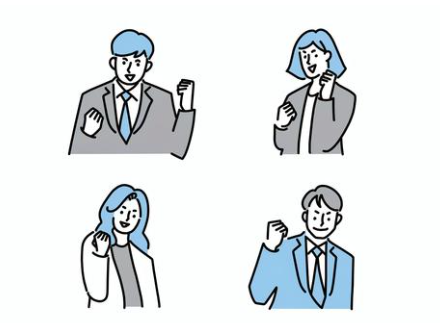

プログラミングしている皆さん！
お悩み抱えてませんか？
-
どうやってお仕事取るの
そもそも
お仕事の取り方が
分からない -
誰に頼ればいいんだろう？
制作していて
自分のスキルやリソースだけでは対応しきれない -
もっと効率よく学びたい
プログラミングを学ぶ上で
案件獲得されてる方の
意見やアドバイスが聞きたい！ -
フリーランスって孤独・・・

協力し会える仲間や
頼りになる同じ年代の方々との
人脈を広げたい
誰に聞いたらわからない
どうやって解決したらいいかも分からない
配慮ではなく遠慮してしまっている・・・
そのお悩み
Leaf
に入れば
ぜーんぶ解決できます!!
-
お仕事がもらえるきっかけに！
お仕事のもらい方だけでなく
いろんなお仕事の情報が
手に入る
フリ×フリに入れば
お仕事のもらい方のノウハウだけでなく
希望すればフリ×フリ内で紹介されている
お仕事をすることも！ -
お仕事がもらえるきっかけに！
お仕事のもらい方だけでなく
いろんなお仕事の情報が
手に入る
フリ×フリに入れば
お仕事のもらい方のノウハウだけでなく
希望すればフリ×フリ内で紹介されている
お仕事をすることも！ -
お仕事がもらえるきっかけに！
お仕事のもらい方だけでなく
いろんなお仕事の情報が
手に入る
フリ×フリに入れば
お仕事のもらい方のノウハウだけでなく
希望すればフリ×フリ内で紹介されている
お仕事をすることも！ -
お仕事がもらえるきっかけに！
お仕事のもらい方だけでなく
いろんなお仕事の情報が
手に入る
フリ×フリに入れば
お仕事のもらい方のノウハウだけでなく
希望すればフリ×フリ内で紹介されている
お仕事をすることも！